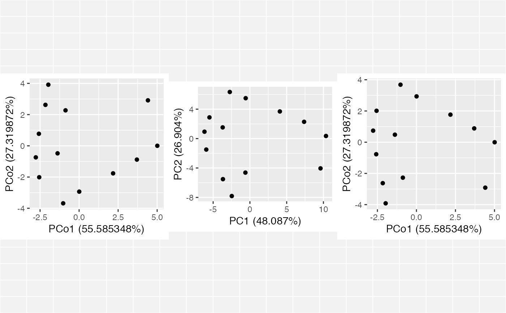

Functionality for classical multidimensional scaling objects
methods-cmds.RdThese methods extract data from, and attribute new data to,
objects of class "cmds_ord". This is a class introduced in this package
to identify objects returned by cmdscale_ord(), which wraps
stats::cmdscale().
# S3 method for cmds_ord as_tbl_ord(x) # S3 method for cmds_ord recover_rows(x) # S3 method for cmds_ord recover_cols(x) # S3 method for cmds_ord recover_inertia(x) # S3 method for cmds_ord recover_coord(x) # S3 method for cmds_ord recover_conference(x) # S3 method for cmds_ord augmentation_rows(x) # S3 method for cmds_ord augmentation_cols(x) # S3 method for cmds_ord augmentation_coord(x)
Arguments
| x | An ordination object. |
|---|
Examples
# Multidimensional scaling of country differences and regression of attributes # Reproduce Exhibit 4.2 in Greenacre (2010) data(country_differences) country_differences %>% cmdscale_ord(k = 2) %>% as_tbl_ord() %>% print() -> differences_cmds#> # A tbl_ord of class 'cmds_ord': (13 x 2) x (13 x 2)' #> # 2 coordinates: PCo1 and PCo2 #> # #> # Rows: [ 13 x 2 | 0 ] #> PCo1 PCo2 | #> | #> 1 0.00781 -2.94 | #> 2 -1.02 -3.68 | #> 3 3.70 -0.883 | #> 4 -2.56 -2.01 | #> 5 4.41 2.91 | #> #> # #> # Columns: [ 13 x 2 | 0 ] #> PCo1 PCo2 | #> | #> 1 0.00781 -2.94 | #> 2 -1.02 -3.68 | #> 3 3.70 -0.883 | #> 4 -2.56 -2.01 | #> 5 4.41 2.91 | #>differences_plot <- differences_cmds %>% ggbiplot(aes(x = 1, y = 2, label = .name)) + geom_cols_text() differences_plot# Reproduce Exhibit 4.5 in Greenacre (2010) data(country_attributes) lm(country_attributes ~ get_rows(differences_cmds)) %>% as_tbl_ord() %>% print() -> attributes_fit#> # A tbl_ord of class 'mlm': (13 x 3) x (6 x 3)' #> # 3 coordinates: (Intercept), PCo1, PCo2 #> # #> # Rows: [ 13 x 3 | 0 ] #> `(Intercept)` PCo1 PCo2 | #> | #> 1 1 0.00781 -2.94 | #> 2 1 -1.02 -3.68 | #> 3 1 3.70 -0.883 | #> 4 1 -2.56 -2.01 | #> 5 1 4.41 2.91 | #> #> # #> # Columns: [ 6 x 3 | 0 ] #> `(Intercept)` PCo1 PCo2 | #> | #> 1 5.23 0.423 -0.513 | #> 2 5.69 -0.395 -0.618 | #> 3 6.08 -0.399 -0.645 | #> 4 4. 0.502 -0.444 | #> 5 3.85 0.660 0.0102 | #> 6 4.92 0.627 -0.591 |differences_plot + geom_cols_vector(data = attributes_fit) + geom_cols_text_radiate(data = attributes_fit, hjust = .3)# Compare an MDS to a PCA data(country_differences) country_differences %>% cmdscale_ord(k = 2) %>% as_tbl_ord() %>% print() -> differences_cmds#> # A tbl_ord of class 'cmds_ord': (13 x 2) x (13 x 2)' #> # 2 coordinates: PCo1 and PCo2 #> # #> # Rows: [ 13 x 2 | 0 ] #> PCo1 PCo2 | #> | #> 1 0.00781 -2.94 | #> 2 -1.02 -3.68 | #> 3 3.70 -0.883 | #> 4 -2.56 -2.01 | #> 5 4.41 2.91 | #> #> # #> # Columns: [ 13 x 2 | 0 ] #> PCo1 PCo2 | #> | #> 1 0.00781 -2.94 | #> 2 -1.02 -3.68 | #> 3 3.70 -0.883 | #> 4 -2.56 -2.01 | #> 5 4.41 2.91 | #>#> # A tbl_ord of class 'prcomp': (13 x 13) x (13 x 13)' #> # 13 coordinates: PC1, PC2, ..., PC13 #> # #> # Rows: [ 13 x 13 | 0 ] #> PC1 PC2 PC3 ... | #> | #> 1 -0.576 5.50 3.17 | #> 2 -2.74 6.34 -0.0599 ... | #> 3 7.37 2.28 -1.22 | #> 4 -5.50 2.88 -1.06 | #> 5 9.60 -4.05 -3.03 | #> #> # #> # Columns: [ 13 x 13 | 0 ] #> PC1 PC2 PC3 ... | #> | #> 1 0.104 -0.423 -0.340 | #> 2 0.206 -0.475 -0.00197 ... | #> 3 -0.289 -0.206 0.121 | #> 4 0.343 -0.250 0.102 | #> 5 -0.352 0.161 0.302 | #># negate PCA axis to match MDS axis plot(gridExtra::arrangeGrob(grobs = list( ggbiplot(differences_cmds) + geom_rows_point(), ggbiplot(differences_pca) + scale_y_reverse() + geom_rows_point() ), ncol = 2))